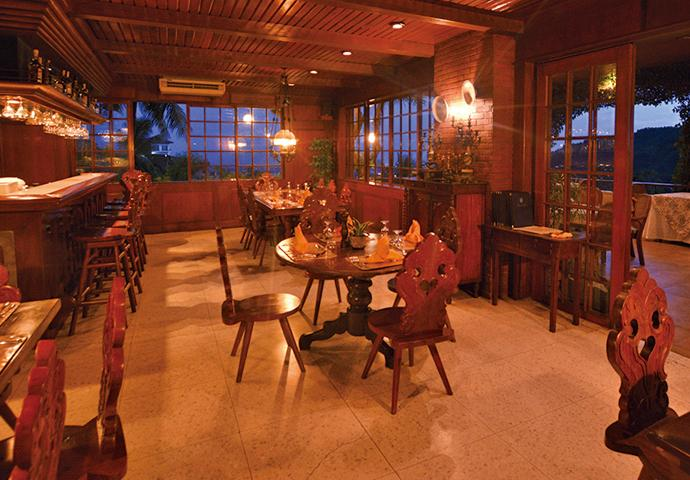

Rooted in Cebu
SEREIN was created from a simple idea: to celebrate the food, culture, and hospitality of Cebu.
We believe that Filipino food is more than something to eat. It is a way of bringing families, friends, and communities together.
Every dish at SEREIN is inspired by traditional Cebuano flavors while being presented in a warm and modern dining environment.
Our History
Founded in 2026, SEREIN began with a passion for sharing the authentic flavors of Cebu with guests. From traditional family-inspired recipes to locally loved dishes, the restaurant was created to bring the taste and spirit of Cebu into one welcoming place.
As SEREIN continues to grow, our goal remains the same: to preserve Cebuano food traditions while creating memorable dining experiences for every guest.